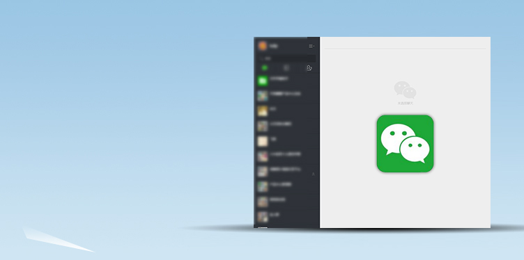

<div class="main wide">

<div class="text" style="position:absolute; top:85px; left:180px">

<div><h1>Wechat Web Client</h1></div>

<div><h2>
<p>Ubuntu Kylin offers a Wechat client on Web for users. It can be downloaded from Kylin software Center or www.ubuntukylin.com.</p>
</h2></div>


</div>



</div>
